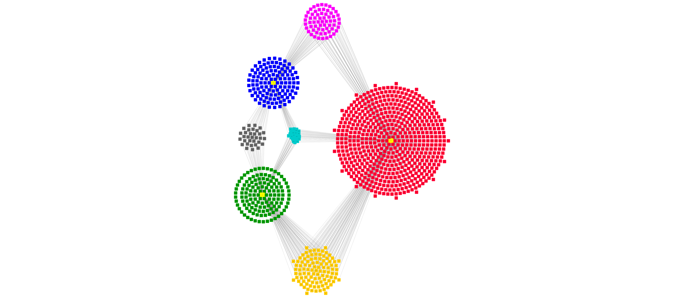

scMINER Guided Analysis on network visualization
Visualization of regulon rewiring between different cell states.
Read in network
We start by reading SJARACNE output with function get.SJAracne.network().
# Create a SparseExpressionSet object with meta info
net2 <- NetBID2::get.SJAracne.network('TEXeff_13218_13218_3394/tf/TEXeff_13218_13218_3394SJARACNE_TF/SJARACNE_out.final/consensus_network_ncol_.txt')
Then a plot with regulon of a specific TF can be created by using draw.targetNet() function.
### Calculate edge score for each target
use_driver='Batf'
celltype="t_TEXeff"
edge_score <-net2$target_list[[use_driver]]$MI*sign(net1$target_list[[use_driver]]$spearman)
### DAG_result_tf is the TF DA master table ##########
NetBID2::draw.targetNet(source_label=use_driver,source_z=DAG_result_tf[DAG_result_tf$geneSymbol==use_driver,celltype],
edge_score = edge_score,pdf_file=sprintf('./targetNet_out_%s.pdf',use_driver),label_cex = 1,n_layer=2,source_cex = 1, alphabetical_order=TRUE)

The rewiring of a specific TF can be output to CytoScape.
## combine all the target into a master table for CytoScape input
Batf_target1<-net1$target_list[[use_driver]]
Batf_target2<-net2$target_list[[use_driver]]
Batf_target3<-net3$target_list[[use_driver]]
Batf_target_all<-rbind(Batf_target,Batf_target2,Batf_target3)
write.table(Batf_target_all,file = "Batf_network_rewiring.txt",row.names = F,sep = "\t",quote = F)
